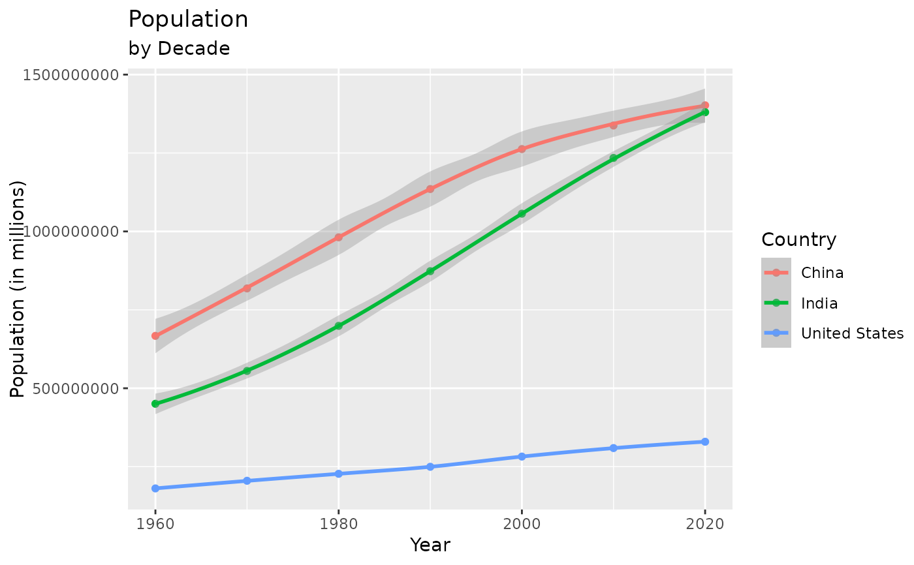

From World Bank, population 1960-2020
Format
A data frame with 216 rows and 62 variables.
- country
Name of country.
- year_1960
population in 1960.
- year_1961
population in 1961.
- year_1962
population in 1962.
- year_1963
population in 1963.
- year_1964
population in 1964.
- year_1965
population in 1965.
- year_1966
population in 1966.
- year_1967
population in 1967.
- year_1968
population in 1968.
- year_1969
population in 1969.
- year_1970
population in 1970.
- year_1971
population in 1971.
- year_1972
population in 1972.
- year_1973
population in 1973.
- year_1974
population in 1974.
- year_1975
population in 1975.
- year_1976
population in 1976.
- year_1977
population in 1977.
- year_1978
population in 1978.
- year_1979
population in 1979.
- year_1980
population in 1980.
- year_1981
population in 1981.
- year_1982
population in 1982.
- year_1983
population in 1983.
- year_1984
population in 1984.
- year_1985
population in 1985.
- year_1986
population in 1986.
- year_1987
population in 1987.
- year_1988
population in 1988.
- year_1989
population in 1989.
- year_1990
population in 1990.
- year_1991
population in 1991.
- year_1992
population in 1992.
- year_1993
population in 1993.
- year_1994
population in 1994.
- year_1995
population in 1995.
- year_1996
population in 1996.
- year_1997
population in 1997.
- year_1998
population in 1998.
- year_1999
population in 1999.
- year_2000
population in 2000.
- year_2001
population in 2001.
- year_2002
population in 2002.
- year_2003
population in 2003.
- year_2004
population in 2004.
- year_2005
population in 2005.
- year_2006
population in 2006.
- year_2007
population in 2007.
- year_2008
population in 2008.
- year_2009
population in 2009.
- year_2010
population in 2010.
- year_2011
population in 2011.
- year_2012
population in 2012.
- year_2013
population in 2013.
- year_2014
population in 2014.
- year_2015
population in 2015.
- year_2016
population in 2016.
- year_2017
population in 2017.
- year_2018
population in 2018.
- year_2019
population in 2019.
- year_2020
population in 2020.
Examples
library(dplyr)
library(ggplot2)
library(tidyr)
# List percentage of population change from 1960 to 2020
world_pop %>%
mutate(percent_change = round((year_2020 - year_1960) / year_2020 * 100, 2)) %>%
mutate(rank_pop_change = round(rank(-percent_change)), 0) %>%
select(rank_pop_change, country, percent_change) %>%
arrange(rank_pop_change)
#> rank_pop_change country percent_change
#> 1 1 United Arab Emirates 99.07
#> 2 2 Qatar 98.36
#> 3 3 Kuwait 93.70
#> 4 4 Sint Maarten (Dutch part) 93.06
#> 5 5 Djibouti 91.54
#> 6 6 Jordan 90.85
#> 7 7 Bahrain 90.45
#> 8 8 St. Martin (French part) 89.92
#> 9 9 Oman 89.20
#> 10 10 Saudi Arabia 88.26
#> 11 11 Cayman Islands 88.02
#> 12 12 Cote d'Ivoire 86.72
#> 13 13 Niger 86.00
#> 14 14 Uganda 85.21
#> 15 15 Turks and Caicos Islands 84.96
#> 16 16 Kenya 84.90
#> 17 17 Gambia, The 84.89
#> 18 18 Angola 83.40
#> 19 19 Maldives 83.37
#> 20 20 Zambia 83.30
#> 21 21 Tanzania 83.17
#> 22 22 Congo, Dem. Rep. 82.97
#> 23 23 Solomon Islands 82.84
#> 24 24 Sudan 82.79
#> 25 26 Northern Mariana Islands 82.66
#> 26 26 Somalia 82.66
#> 27 27 Andorra 82.64
#> 28 28 Yemen, Rep. 82.18
#> 29 29 Iraq 81.88
#> 30 30 Equatorial Guinea 81.80
#> 31 31 Chad 81.73
#> 32 32 Mauritania 81.71
#> 33 33 Madagascar 81.58
#> 34 34 Congo, Rep. 81.55
#> 35 35 Brunei Darussalam 81.32
#> 36 36 Togo 80.91
#> 37 37 Malawi 80.87
#> 38 38 Senegal 80.85
#> 39 39 Ethiopia 80.73
#> 40 40 Cameroon 80.50
#> 41 41 Benin 79.94
#> 42 42 Pakistan 79.63
#> 43 43 Honduras 79.42
#> 44 44 Vanuatu 79.26
#> 45 45 Libya 78.92
#> 46 46 Ghana 78.65
#> 47 47 Botswana 78.62
#> 48 48 Tajikistan 78.12
#> 49 49 Nigeria 78.10
#> 50 50 Comoros 78.02
#> 51 51 Liberia 77.88
#> 52 52 Gabon 77.49
#> 53 53 Rwanda 77.34
#> 54 54 Israel 77.06
#> 55 55 Mozambique 77.01
#> 56 56 Burkina Faso 76.90
#> 57 57 Afghanistan 76.89
#> 58 58 Belize 76.85
#> 59 59 Burundi 76.47
#> 60 60 Philippines 76.03
#> 61 61 Guatemala 75.51
#> 62 62 Marshall Islands 75.21
#> 63 63 Uzbekistan 75.09
#> 64 64 Namibia 75.04
#> 65 65 Malaysia 74.80
#> 66 66 Papua New Guinea 74.79
#> 67 67 Algeria 74.78
#> 68 68 South Sudan 74.60
#> 69 69 Zimbabwe 74.59
#> 70 70 Ecuador 74.25
#> 71 71 Macao SAR, China 74.16
#> 72 72 Mali 74.01
#> 73 73 Egypt, Arab Rep. 73.97
#> 74 74 Iran, Islamic Rep. 73.92
#> 75 75 Costa Rica 73.88
#> 76 76 Syrian Arab Republic 73.87
#> 77 77 Panama 73.74
#> 78 78 Lebanon 73.56
#> 79 79 Turkmenistan 73.42
#> 80 80 Guinea 73.39
#> 81 81 British Virgin Islands 73.37
#> 82 82 Paraguay 73.31
#> 83 83 Nicaragua 73.23
#> 84 84 French Polynesia 72.20
#> 85 85 Bahamas, The 72.15
#> 86 86 Venezuela, RB 71.37
#> 87 87 South Africa 71.17
#> 88 88 Bhutan 71.06
#> 89 89 Singapore 71.04
#> 90 90 Eswatini 70.99
#> 91 92 New Caledonia 70.95
#> 92 92 Sierra Leone 70.95
#> 93 94 Bangladesh 70.85
#> 94 94 Lao PDR 70.85
#> 95 94 Mongolia 70.85
#> 96 96 Mexico 70.70
#> 97 97 Sao Tome and Principe 70.66
#> 98 98 Dominican Republic 69.63
#> 99 99 Virgin Islands (U.S.) 69.42
#> 100 100 Peru 69.20
#> 101 101 Central African Republic 68.91
#> 102 102 Guinea-Bissau 68.69
#> 103 103 Bolivia 68.67
#> 104 104 Colombia 68.44
#> 105 105 Indonesia 67.92
#> 106 106 Turkey 67.43
#> 107 107 India 67.35
#> 108 108 Kyrgyz Republic 67.04
#> 109 109 Morocco 66.60
#> 110 110 Vietnam 66.44
#> 111 111 Haiti 66.09
#> 112 112 Brazil 66.04
#> 113 113 Cambodia 65.77
#> 114 114 Kiribati 65.51
#> 115 115 Nepal 65.32
#> 116 116 Tunisia 64.65
#> 117 117 Timor-Leste 64.01
#> 118 118 Cabo Verde 63.71
#> 119 119 American Samoa 63.54
#> 120 120 Azerbaijan 61.47
#> 121 121 Micronesia, Fed. Sts. 61.30
#> 122 122 Lesotho 60.92
#> 123 123 Thailand 60.75
#> 124 124 Guam 60.46
#> 125 125 Myanmar 60.05
#> 126 126 Australia 59.99
#> 127 127 Nauru 59.60
#> 128 128 Hong Kong SAR, China 58.89
#> 129 129 Seychelles 57.65
#> 130 130 Chile 57.46
#> 131 131 El Salvador 57.35
#> 132 132 Liechtenstein 56.73
#> 133 133 Fiji 56.11
#> 134 134 Korea, Dem. People's Rep. 55.68
#> 135 135 Sri Lanka 54.95
#> 136 136 Tuvalu 54.88
#> 137 137 Argentina 54.86
#> 138 138 San Marino 54.51
#> 139 139 New Zealand 53.35
#> 140 140 Canada 52.88
#> 141 141 Cyprus 52.55
#> 142 142 China 52.42
#> 143 143 Iceland 52.08
#> 144 144 Korea, Rep. 51.70
#> 145 145 St. Lucia 51.15
#> 146 146 Suriname 50.93
#> 147 147 Luxembourg 50.34
#> 148 148 Aruba 49.23
#> 149 149 Mauritius 47.91
#> 150 150 Kazakhstan 47.03
#> 151 151 Kosovo 46.66
#> 152 152 Palau 46.00
#> 153 153 Samoa 45.25
#> 154 154 United States 45.17
#> 155 155 Jamaica 45.00
#> 156 156 Antigua and Barbuda 44.72
#> 157 157 Ireland 43.37
#> 158 158 Albania 43.31
#> 159 159 Isle of Man 43.03
#> 160 160 Monaco 42.77
#> 161 161 Greenland 42.34
#> 162 162 Tonga 41.74
#> 163 163 Trinidad and Tobago 39.41
#> 164 164 Switzerland 38.31
#> 165 165 Malta 37.83
#> 166 166 Cuba 36.95
#> 167 167 Armenia 36.75
#> 168 168 Spain 35.68
#> 169 169 Netherlands 34.14
#> 170 170 Norway 33.43
#> 171 171 France 30.82
#> 172 172 Bermuda 30.52
#> 173 173 Gibraltar 30.49
#> 174 174 Faroe Islands 29.14
#> 175 175 North Macedonia 28.55
#> 176 176 Sweden 27.71
#> 177 177 Guyana 27.30
#> 178 178 St. Vincent and the Grenadines 27.02
#> 179 179 Uruguay 26.92
#> 180 180 Puerto Rico 26.17
#> 181 181 Japan 25.92
#> 182 182 Slovak Republic 25.48
#> 183 183 Slovenia 24.54
#> 184 184 Montenegro 22.70
#> 185 185 Greece 22.25
#> 186 186 United Kingdom 22.04
#> 187 187 Moldova 21.93
#> 188 188 Poland 21.91
#> 189 189 Denmark 21.47
#> 190 190 Austria 20.97
#> 191 191 Belgium 20.79
#> 192 192 Grenada 20.08
#> 193 193 Finland 19.91
#> 194 194 Barbados 19.62
#> 195 195 Curacao 19.47
#> 196 196 Russian Federation 16.80
#> 197 197 Dominica 16.63
#> 198 198 Italy 15.71
#> 199 199 Portugal 14.05
#> 200 200 Belarus 12.78
#> 201 201 Germany 12.52
#> 202 202 Czech Republic 10.25
#> 203 203 Estonia 8.98
#> 204 204 Romania 4.56
#> 205 205 Serbia 4.35
#> 206 206 St. Kitts and Nevis 3.75
#> 207 207 Ukraine 3.33
#> 208 208 Georgia 1.84
#> 209 209 Bosnia and Herzegovina 1.68
#> 210 210 Lithuania 0.58
#> 211 211 Croatia -2.30
#> 212 212 Hungary -2.40
#> 213 213 Latvia -11.54
#> 214 214 Bulgaria -13.57
#> 215 215 Eritrea NA
#> 216 216 West Bank and Gaza NA
# Graph population in millions by decade for specified countries
world_pop %>%
select(
country, year_1960, year_1970, year_1980, year_1990,
year_2000, year_2010, year_2020
) %>%
filter(country %in% c("China", "India", "United States")) %>%
pivot_longer(
cols = c(year_1960, year_1970, year_1980, year_1990, year_2000, year_2010, year_2020),
names_to = "year",
values_to = "population"
) %>%
mutate(year = as.numeric(gsub("year_", "", year))) %>%
ggplot(aes(year, population, color = country)) +
geom_point() +
geom_smooth(method = "loess", formula = "y ~ x") +
labs(
title = "Population",
subtitle = "by Decade",
x = "Year",
y = "Population (in millions)",
color = "Country"
)
